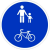
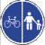

Čia pateikiama techninė informacija žymėtojams, norintiems teisingai pažymėti objektus OpenStreetMap, kad jie būtų rodomi šiame dviračių žemėlapyje.
Informacija paimta iš Dviračių infrastruktūros žymėjimo puslapio
Dviračių maršrutai ir rekreacinės trasos - specialūs dviračių eismui maršrutai, turintys savo maršrutą nepriklausomą nuo kelių tinklo, tiesiami per želdynus, rekreacines zonas, jungiantys lankytinus objektus, vietas. Dviračių trasos nuo dviračių maršrutų skiriasi tuo, kad trasoms privaloma tokia infrastruktūra kaip ženklai, žymėjimas, poilsio aikštelės, ir t.t.
Dviračių maršrutai žymimi ryšiu (visi maršruto keliai sudedami į ryšį) su tokiomis žymomis:
Dviračių eismui skirtas takas, pažymėtas kelio ženklu Nr. 411 ir nuo važiuojamosios kelio dalies ir pėsčiųjų eismo fiziškai atskirtas šonine skiriamąja juosta, apsauginių atitvarų sistemomis arba bordiūru žymimas:
Dviračių ir pėsčiųjų takai atskirti ir neatskriti vienas nuo kito, pažymėti ženklais  arba  žymimi:
Jei dviračių takas eina šalia gatvės, jis nebraižomas kaip atskiras vektorius. Esamam keliui uždedama žyma:
Gatvėje esančios dviračių juostos (pažymėtos atitinkamu horizontaliuoju žymėjimu). Atskiras vektorius nebraižomas. Esamam keliui uždedama žyma:
Kelias nėra skirtas išimtinai dviračiams, bet juo siūloma važiuoti dviračiu, kai nėra galimybės važiuoti konkrečiai dviračiams skirtu keliu. Siūloma taip žymėti tik tokias atkarpas, kuriomis siūloma „užpildyti“ dviračių infrastruktūros spragas, t.y. nurodoma, kaip iš vieno dviračių tako ar juostos patekti prie kito. Žymėjimas:
Tai specialiai dviračiams pritaikytos stovėjimo vietos, paprastai su dviračių stovais, kur dviračius galima pastatyti ir prirakinti. Žymima:
Dviračių ir jų reikmenų parduotuvės. Žymima:
Vieta, kur galima prisipūsti padangą. Žymima:
Vieta, kur galima išsinuomoti dviratį. Žymima: